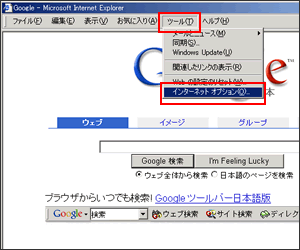
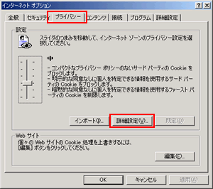

ブラウザのメニューから「ツール」→「インターネットオプション」を選びます。

インターネットオプションのメニューの中から「プライバシータブ」をクリックすると左の画面が表示されます。 ここで「詳細設定ボタン」を押します。
プライバシー設定の詳細画面が表示されますので「自動Cookie処理を上書きする」という項目にチェックを入れ、有効にして下さい。OKボタンを押して画面を閉じ、インターネットオプション画面も閉じます。これで設定は完了です。